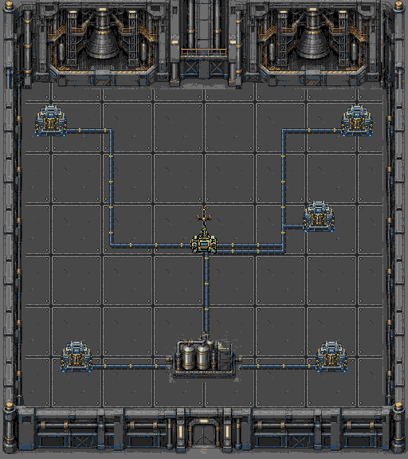

PLAGUEFALL / FASE 15 / REVISÃO LOCAL
Antena no padrão das estações de energia
Mesmo piso rebitado, limites modulares, bateria, conexões e geradores nativos da sala 14. Os cinco geradores já estão ligados. A missão continua sendo defender o rádio por 120 segundos.
Rádio compacto de 48×64, com visor ciano e seis estados na paleta PAL1 existente. Somente a base de 32×16 bloqueia passagem e recebe dano. O mastro é visual e permite passagem; a barra junto ao núcleo e o piscar local identificam a integridade do objetivo. Atores passam atrás da antena e à frente do núcleo conforme a posição no chão.
Documentação · Geometria e memória · Validação e ROM · Prompt exato
Cenário completo

Composição nativa: geradores ligados, bateria conectada e nova antena. Não é captura do emulador.Antena e estados do rádio
Capturas reais NTSC
 Passagem atrás do mastro sem colisão
Passagem atrás do mastro sem colisão Personagem à frente da base; barra de integridade
Personagem à frente da base; barra de integridade Núcleo e estações
Núcleo e estações Bateria e piso
Bateria e piso Motor em ignição: combate e relógio pausados
Motor em ignição: combate e relógio pausados Defesa completa e resultado
Defesa completa e resultadoValidação
28 câmeras por região com cenário e equipamentos idênticos em VRAM, seis estados do rádio, zero falhas de cache, travessia por controle e colisões. Dano somente nos quatro lados da base, passagem livre pelo mastro, ausência de dano fora do núcleo, profundidade dos atores e piscar local verificados. Pausa, ignição, reinício normal, defesa completa de120s e continuação para16 também passaram.
| Região | Setor | Carga artificial | Falhas de cache |
|---|
| NTSC | engines | 54.15 FPS | 0 |
| NTSC | antenna | 57.05 FPS | 0 |
| NTSC | battery | 56.2 FPS | 0 |
| PAL | engines | 47.75 FPS | 0 |
| PAL | antenna | 48.95 FPS | 0 |
| PAL | battery | 48.15 FPS | 0 |
Carga de20s por setor: três inimigos e4+4tiros, com proteção de vida e reposição de projéteis inativos porRAM. Hardware físico e dificuldade humana não certificados.
480 tiles de cache + 53 geradores + 45 rádio = 578/640 tiles. Nenhuma aproximação de padrões. ROM SHA256: 856de009353a84f7564dc4d030a622e69ca2cfbc9b3ef86e87d502745d7e7601.